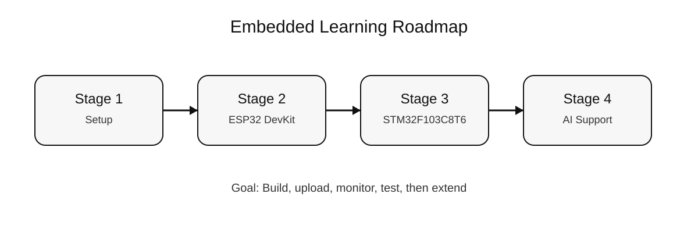
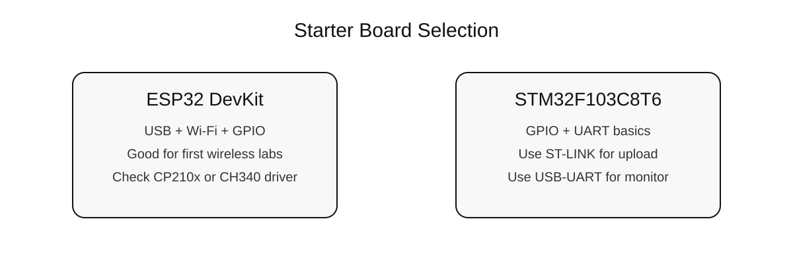
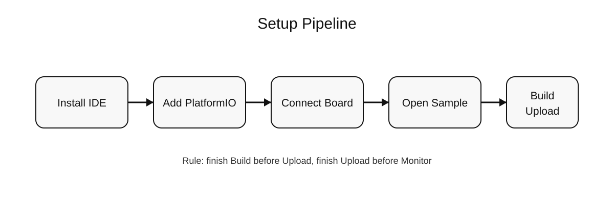
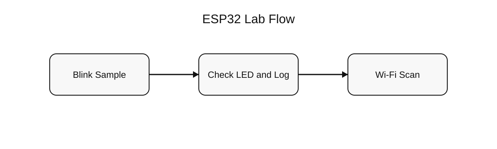
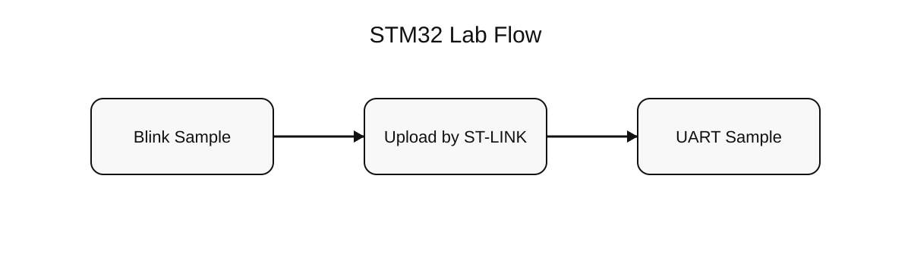
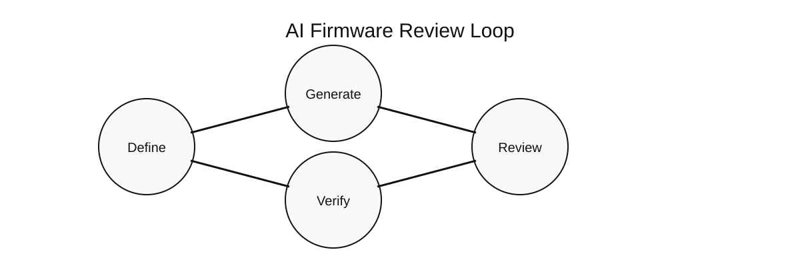

Sổ tay lập trình nhúng nội bộ
Tài liệu tổng hợp về cài đặt môi trường, thực hành ESP32 DevKit và STM32F103C8T6, sử dụng AI hỗ trợ firmware và chuẩn bị triển khai tài liệu lên môi trường public
| Đơn vị | Z Lab VN |
| Phân loại | NỘI BỘ |
| Bộ tài liệu | Embedded |
| Phiên bản | 1.1 |
| Ngày cập nhật | 08/04/2026 |
| 0. HƯỚNG DẪN CHI TIẾT TỪNG BƯỚC: VSCode + PlatformIO + GitHub + Copilot | Xem chi tiết → |
| 1. Mục đích, phạm vi và chuẩn đầu ra | Mở đầu |
| 2. Chuẩn phần cứng cơ bản và bộ dụng cụ | Phần I |
| 3. Cài đặt Visual Studio Code, PlatformIO, driver và kết nối board | Phần II |
| 4. Vị trí sample code, nội dung test và cách chạy chương trình | Phần III |
| 5. Thực hành ESP32 DevKit | Phần III |
| 6. Thực hành STM32F103C8T6 | Phần IV |
| 7. Prompt AI, checklist rà soát và cách dùng AI đúng phạm vi | Phần V |
| 8. Chuẩn triển khai web, GitHub Pages, Vercel và custom domain | Phần VI |
| 9. Checklist bàn giao cho nhân viên và tài liệu tham khảo | Phần cuối |
Mục tiêu của sổ tay: Một nhân viên mới có thể đọc một tài liệu duy nhất, cài được môi trường, mở được sample, nạp được chương trình, biết nhờ AI hỗ trợ đúng cách và biết cách đóng gói tài liệu để triển khai lên web.
1. Mục đích, phạm vi và chuẩn đầu ra
Sổ tay này được dùng để đào tạo nội bộ các nhân sự bắt đầu làm việc với lập trình nhúng tại Z Lab VN, sử dụng Visual Studio Code làm môi trường chung cho giai đoạn nhập môn.
Phạm vi tài liệu tập trung vào hai nền tảng cơ bản là ESP32 DevKit và STM32F103C8T6. Mỗi người học cần nắm được phần cứng cơ bản, cấu trúc project, thao tác Build, Upload, Monitor, cách đọc log và cách kiểm tra lỗi trước khi chuyển sang các bài toán có độ phức tạp cao hơn.
Đầu ra tối thiểu sau khi hoàn thành tài liệu gồm: cài được môi trường, chạy được sample ESP32 và STM32, hiểu nơi lấy code test, biết sửa code mức cơ bản, biết viết prompt AI kỹ thuật và biết cách chuẩn bị site tĩnh để triển khai lên GitHub Pages hoặc Vercel.

Hình 1. Lộ trình triển khai từ cài môi trường đến giai đoạn áp dụng AI và triển khai tài liệu.
2. Chuẩn phần cứng cơ bản và bộ dụng cụ
Để giảm thời gian xử lý lỗi do sai khác phần cứng, tài liệu này quy định hai loại cơ bản dùng trong giai đoạn đầu là ESP32 DevKit và STM32F103C8T6. Việc chuẩn hóa board giúp người hướng dẫn dùng chung sample, chung sơ đồ nối dây và chung checklist kiểm tra.
| Nhóm | Board cơ bản | Mục tiêu sử dụng | Thiết bị đi kèm |
|---|---|---|---|
| ESP32 | ESP32 DevKit | GPIO, Serial Monitor, Wi-Fi Scan | Cáp Micro USB data |
| STM32 | STM32F103C8T6 | GPIO, UART cơ bản | ST-LINK và USB-UART |
Bộ dụng cụ tối thiểu cho mỗi người: 1 breadboard nhỏ, 2 LED rời, 2 điện trở 220 ohm, bộ dây jumper, 1 đồng hồ đo cơ bản nếu có, 1 cáp USB data tốt.
Lưu ý riêng cho STM32F103C8T6: Nạp code qua ST-LINK theo chân SWD. Nếu cần theo dõi log monitor trên máy tính, phải bổ sung một USB-UART riêng và nối đúng TX, RX, GND.

Hình 2. Bảng tóm tắt lý do chọn board cơ bản cho giai đoạn nhập môn.
3. Cài đặt Visual Studio Code, PlatformIO, driver và kết nối board
Quy trình cài đặt được thực hiện theo một thứ tự cố định để tránh lỗi chéo giữa editor, extension, driver và cổng kết nối.

Hình 3. Chuỗi thao tác chuẩn từ cài editor đến nạp chương trình đầu tiên.
3.1. Các bước cài đặt
- Cài Visual Studio Code từ trang chính thức của Microsoft.
- Mở Visual Studio Code và cài extension PlatformIO IDE.
- Với ESP32 DevKit, cắm cáp USB data và kiểm tra hệ điều hành đã nhận cổng serial chưa.
- Với STM32F103C8T6, kết nối ST-LINK để nạp và kết nối USB-UART nếu cần monitor.
- Mở đúng thư mục sample trong Embedded/samples thay vì mở toàn bộ workspace khi bắt đầu thực hành.
3.2. Driver cần chú ý
- ESP32 DevKit thường dùng CP210x hoặc CH340 cho USB-UART. Cần kiểm tra đúng chip trên board để cài đúng driver.
- STM32F103C8T6 không có mạch nạp tích hợp. Cần ST-LINK cho nạp code. Nếu monitor bằng UART, USB-UART phải được nối đúng TX sang RX, RX sang TX và GND chung.
4. Vị trí sample code, nội dung test và cách chạy chương trình
Các code test đã được đặt sẵn trong thư mục Embedded/samples. Người học không cần tự tạo project mới trong buổi đầu mà nên mở trực tiếp các sample có sẵn để rút ngắn thời gian thao tác.
| Thư mục sample | Nội dung test |
|---|---|
| samples/esp32-blink-pio | Nhấp nháy LED và in trạng thái lên serial |
| samples/esp32-wifi-scan-pio | Quét mạng Wi-Fi và in SSID, RSSI |
| samples/stm32-blink-pio | Nhấp nháy LED và in trạng thái qua UART |
| samples/stm32-uart-pio | In bộ đếm và thời gian hoạt động qua UART |
4.1. Chạy bằng giao diện Visual Studio Code
- Mở Visual Studio Code.
- Chọn File -> Open Folder.
- Chọn đúng một thư mục sample cụ thể.
- Chờ PlatformIO chuẩn bị package lần đầu.
- Bấm Build.
- Nếu biên dịch thành công, bấm Upload.
- Sau khi nạp xong, bấm Monitor.
4.2. Chạy bằng câu lệnh nếu đã có pio trong terminal
5. Thực hành ESP32 DevKit
ESP32 DevKit được dùng để kiểm tra chuỗi thao tác cơ bản gồm biên dịch, nạp, theo dõi monitor, LED output và Wi-Fi scan.

Hình 4. Trình tự thực hành ESP32 từ Blink đến Wi-Fi Scan.
5.1. Cấu hình project ESP32 Blink
5.2. Đoạn mã test chính của ESP32 Blink
5.3. Kết quả mong đợi
- LED trên board nhấp nháy theo chu kỳ.
- Monitor hiển thị log trạng thái nếu mở sample đầy đủ trong repo.
- Không có lỗi reset bất thường khi chỉ chạy blink.
5.4. Bài test Wi-Fi Scan
Mở thư mục samples/esp32-wifi-scan-pio, Build, Upload và Monitor. Kết quả mong đợi là monitor hiển thị các dòng gồm thứ tự mạng, tên SSID, giá trị RSSI và trạng thái OPEN.
Nơi lấy code: Toàn bộ sample ESP32 đã có sẵn trong Embedded/samples/esp32-blink-pio và Embedded/samples/esp32-wifi-scan-pio. Khi cần mở rộng bài học, cần sao chép từ các sample này trước khi sửa.
6. Thực hành STM32F103C8T6
STM32F103C8T6 được dùng để luyện thao tác nạp qua ST-LINK, cấu hình board Blue Pill trong PlatformIO và theo dõi UART monitor qua USB-UART.

Hình 5. Trình tự thực hành STM32 từ Blink đến UART Counter.
6.1. Cấu hình project STM32F103C8T6
6.2. Nối dây tối thiểu
- Nối ST-LINK theo chuẩn SWD để nạp code.
- Nếu cần monitor, nối USB-UART với TX, RX và GND đúng chiều.
- Dùng chung mass giữa board và USB-UART.
6.3. Đoạn mã test chính của STM32 UART Counter
6.4. Kết quả mong đợi
- Board nạp được chương trình qua ST-LINK.
- LED thay đổi trạng thái theo chu kỳ.
- Monitor trên USB-UART hiển thị bộ đếm tăng dần.
7. Prompt AI, checklist rà soát và cách dùng AI đúng phạm vi
AI chỉ được dùng để tăng tốc soạn thảo module nhỏ, giải thích lỗi, gợi ý cấu trúc hoặc tạo checklist. AI không được xem là nơi quyết định cuối cùng về sơ đồ chân, điện áp, kết nối phần cứng hoặc logic an toàn.

Hình 6. Vòng lặp chuẩn khi sử dụng AI cho firmware.
7.1. Mẫu prompt chung
7.2. Ví dụ prompt cho ESP32 DevKit
7.3. Ví dụ prompt cho STM32F103C8T6
7.4. Prompt dùng khi debug
8. Chuẩn triển khai web, GitHub Pages, Vercel và custom domain
Bộ tài liệu này là static site. Không cần backend. Vì vậy có thể triển khai trên GitHub Pages hoặc Vercel sau khi có repo hoặc project đích.
8.1. Cấu trúc triển khai
- Trang chính public nên trỏ tới file gốc index.html của repo.
- File gốc index.html có thể chuyển hướng vào Embedded/index.html hoặc hiển thị trực tiếp tài liệu.
- Cần có file .nojekyll nếu dùng GitHub Pages để tránh Jekyll xử lý ngoài ý muốn.
- Có thể dùng vercel.json để cấu hình cách phục vụ static site khi đưa lên Vercel.
8.2. Câu lệnh ví dụ khi đẩy lên GitHub
8.3. Các bước cấu hình GitHub Pages
- Tạo repo GitHub mới hoặc dùng repo đã có.
- Đẩy toàn bộ source lên nhánh main.
- Trong Settings của repo, mở mục Pages.
- Chọn nguồn publish là branch main và thư mục root hoặc docs theo cách tổ chức repo.
- Sau khi GitHub Pages sinh URL, có thể cấu hình custom domain nếu cần.
8.4. Câu lệnh ví dụ khi dùng Vercel
8.5. Các bước cấu hình Vercel
- Tạo project mới trên Vercel từ repo GitHub hoặc upload source.
- Chọn thư mục gốc của project static.
- Kiểm tra trang index và đường dẫn tới Embedded/index.html.
- Trong mục Domains, thêm miền riêng nếu cần và cấu hình DNS theo hướng dẫn của Vercel.
Trạng thái hiện tại của workspace: Chưa có git repository, chưa có GitHub remote, chưa có Vercel project và chưa có công cụ gh hoặc vercel trong máy. Vì vậy tài liệu đã được chuẩn bị theo hướng deploy tĩnh, nhưng link public chỉ có thể tạo sau khi có đích triển khai cụ thể.
9. Checklist bàn giao cho nhân viên và tài liệu tham khảo
| Hạng mục | Trạng thái cần đạt |
|---|---|
| Máy phát triển | Cài xong Visual Studio Code và PlatformIO IDE |
| ESP32 DevKit | Build, upload, monitor được sample Blink và Wi-Fi Scan |
| STM32F103C8T6 | Build, upload bằng ST-LINK và monitor bằng USB-UART |
| AI workflow | Viết được prompt có đủ board, framework, GPIO, goal và constraints |
| Triển khai tài liệu | Biết cấu trúc static site và các bước deploy lên GitHub Pages hoặc Vercel |
9.1. Nguồn tham khảo chính thức
Visual Studio Code: https://code.visualstudio.com/
PlatformIO: https://docs.platformio.org/en/latest/
ESP-IDF Get Started: https://docs.espressif.com/projects/esp-idf/en/latest/esp32/get-started/
GitHub Pages: https://docs.github.com/en/pages
GitHub Pages custom domain: https://docs.github.com/en/pages/configuring-a-custom-domain-for-your-github-pages-site
Vercel docs: https://vercel.com/docs
Vercel custom domains: https://vercel.com/docs/domains